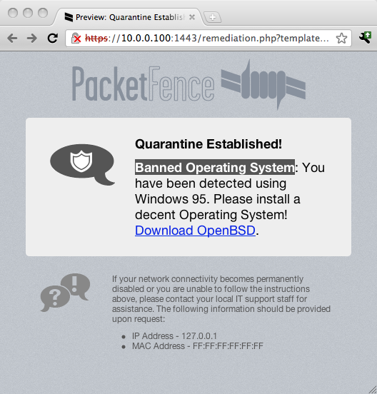
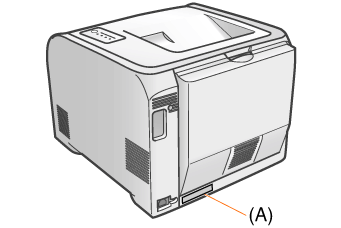
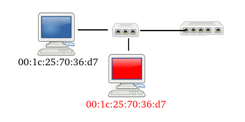

PacketFence, the Open Source NAC: What we've done in the last two years
Salivating on NAC secret sauce
Presentation Plan
- What's Network Access Control (NAC)
- The secret sauce
- The Open Source differentiator
- The good and the bad of 2 years as lead developer
- The Future of PacketFence (aka World Domination Roadmap)
- Community bonding!
Who I am

Olivier Bilodeau
- System architect working at Inverse inc
- PacketFence lead developer since 2009
- Teaching InfoSec to undergraduate in Montreal
- ...
- new father, Open Source nuts, enjoying CTFs a lot, tomdroid lead, brewing beer
Social stuff
- twitter: @packetfence / identi.ca: @plaxx
- delicious: plaxxx / linkedin: olivier.bilodeau
What's Network Access Control (NAC)
NAC elevator pitch
You are smart, let's not focus on what is NAC, here's what you need to know
NAC: Network Access (or Admission) Control
- Authentication
- Map usernames to IP addresses (or MAC addresses)
- Admission
- Allow, partially allow or deny users or devices
- Control
- Watch for unauthorized stuff
- Including: Outdated AV, patch-level, scanning corporate servers, spreading malware, ...

Know who is using your network and making sure they behave
What NAC has become
- Remediation of users
- Crush helpdesk costs by giving users their own path to fix their problems
- Guest management
- Asset/Inventory management
- Simplified access layer configuration
- Reduce network mgmt costs by centralizing decisions on a srv
varies greatly by organization size
The secret sauce
The technology
- Mostly Perl some PHP
- Leveraging open source*
- Designed with high-availability in mind
- active-passive clustering
Key design decisions
- Out of band*
- Edge enforcement*
- No Agent
- Web-based captive portal
- Listen to everything
Its already all there: ARP, MAC, IPs, DHCP, UserAgents, ...
Out of band
At first, relying on SNMP Traps*
- next slide is about that
- LinkUp / LinkDown events
- MAC Nofication events
- Port-Security (SecurityViolation) events
Then RADIUS-based techniques emerged
- Wireless MAC-Authentication*
- Wireless 802.1X*
- followed by Wired MAC-Auth and 802.1X
for us: Wireless network brought a new way of doing things and the Wired side adopted it
Edge enforcement: SNMP Traps based
- Events on network hardware generates Traps
- PacketFence reacts on the traps
- Uses SNMP to authorize the MAC / change the VLAN
- or telnet / ssh if the vendor sucks
- port-sec traps have MACs in them so are best otherwise we need to poll
- port-sec fail last-known state
Protocol Reminders
RADIUS
- key-value based protocol for AAA
- "infrastructure" protocol
Protocol Reminders (contd.)
802.1X

- Extensible Authentication Protocol (EAP) over RADIUS
- Actors
- Supplicant
- client side software integrated in Win, Linux, OSX now
- Authenticator
- aka NAS
- Authentication Server
- NAS is switch / controller, auth srv: FreeRADIUS on PF Server
- explain typical dialog: client speaks to switch/controller with EAPoL (pre-access)
- switch turns around and speak RADIUS with server
- server reacts and send instructions to switch
- end-to-end encrypted EAP tunnel is established
- several EAP flavors things have mostly settled for PEAP/EAP-MsCHAPv2
- switch doesn't have to understand EAP
- Allows to securely share stuff with client (WPA-Enterprise keys)
Protocol Reminders (contd.)
MAC-Authentication
- Simple RADIUS auth with MAC as User-Name
- Concept similar to 802.1X
- infra talks with srv, srv sends instructions
- No strong authentication
- trust based on MAC seen on the wire
- No end-to-end with client
- client doesn't need to "support it"
- not sure what came up first but it feels like a backport of 802.1X
RADIUS CoA (RFC3576)
"new" RADIUS extension to support server-initiated changes
Edge enforcement: RADIUS based
- Access-Accept most request
- Return proper VLAN attribute based on client status
- FreeRADIUS does RADIUS / 802.1X pieces
- full auth incl. NTLM (AD) trough samba
- FreeRADIUS perl extension calls a PacketFence Web Server
- Decision and VLAN returned at this point
- H-A is critical as RADIUS is now a SPOF
The Captive Portal
It provides
- Various authentication mechanism (LDAP, AD, RADIUS, Kerberos, Guests, ...)
- Redirection to the Internet after authentication
- Remediation information to users on isolated devices
The Captive Portal (contd.)
In order to reach the captive portal
- Provide DHCP
- IP to MAC (but we do arp also)
- DNS Blackhole
- In Registration / Isolation VLAN we are the DNS Server
- No matter the request, we return PacketFence's IP
- SSL Redirection
- Requested URL is redirected to captive portal
http://www.google.com => https://pf.initech.com/captive-portal
Using mod_rewrite, allow to enforce SSL without cert errors about domain mismatch
- WISPr support
Voice over IP
here I mean always VoIP with PC on it
SNMP-based
- Old way: Rely on CDP / Voice VLAN features
- and allow dynamically learned MAC on Voice VLAN
- That's right! No secret here, that's weak!
- New way: handle them as regular devices
auto-register them
migrating to new way, using techniques mentionned later
RADIUS-based
- MAC-Auth
- The switch is more important than your device
- 802.1X
- Some VSA's to control behavior
- Very few support 802.1X
- Not widespread
Voice over IP (contd.)
Note to pentesters:
- Most want auto-registration of phones
- Accomplished through:
- MAC Vendor prefix
- CDP
- DHCP fingerprints
- 802.1X MD5 Auth
- Spoof: allowed on the Voice VLAN
- if not worse
- sometimes Voice VLANs IDs pushed down in DHCP Options!
Quarantine

- On a separate VLAN providing strong isolation
- Triggers:
- Operating System (based on DHCP fingerprints)
- I talked about those yesterday (FingerBank talk)
- Browsers (User-Agent string)
- MAC Vendor
- Nessus plugin ID (failed scan)*
- IDS rule triggered*
- Captive portal provides instructions
- Remediation!
Policy checking and Monitoring
Nessus
- Client-side scanning upon authentication
AV signatures, patch level, worms, banned software, etc
- Somewhat limited
- little use w/o domain credentials (scan open ports?)
- not free
- the more tests the slower
Snort IDS
- Clone your traffic to the PacketFence server
- port mirror / SPAN. Available remote also
- Enable some Snort rules
- Devices violating the rules will be isolated
p2p, nmaps, skype, data leakage, websites
Surricata has been tested and works. Official support coming up.
Network Hardware support
- RADIUS-based is easiest
- Somtimes like:
supportsWiredDot1X { return $TRUE };
Because its more standardized. Mostly NAS to ifIndex translation. And deauth
- SNMP is challenging
- Little standards (nothing regarding port-security)
- Most implementation differ (even for the same vendor)
- Nasty bugs*
- Mostly: Read documentation, configure switch, snmpwalk, snmpset, rinse, repeat
detect SNMP technique, authorizeMAC, change VLAN, etc.
PacketFence ZEN
ZEN: Zero Effort NAC
- VMware Virtual Appliance
- Pre-installed
- Pre-configured
Open Source FTW!!
The open source advantage
- Vendor independence
- means we support more hardware brands
- and today's networks are heterogeneous. Also no vendor locking
- Proprietary pricing questionable
- (per IP, per concurrent connections, per AP/Switch...)
- We stay focused and build on top of
- Usual daemons: Apache, Bind, dhcpd
- Network services: Net-SNMP, FreeRADIUS
- Security: snort, iptables
- 70+ Perl CPAN modules
- Linux!
- familiar stack
- The technology is exposed: users know more and there's less reliance on vendors or contractors
- Security is necessarily not solely based on obscurity
- Defeated proprietary NAC by hardcoding sniffed IP/gateway or pinning ARP
2 years as lead developer
The learning, the bad and the good.
Learned: Most NACs are easy to bypass
To achieve user friendliness or network administrator friendliness one often drops security
- Per port exceptions (printers, voip, uplinks, etc.): Find them, leverage them
- CDP enabled: Fake being an IP Phone or an infrastructure device
- Real DNS exposed: DNS-tunnel out
Because there is no authentication built-in L2 / L3
- IP Address spoofing
- MAC Address spoofing
- DHCP client spoofing
-
Use dhclient with a config file. Spoof VoIP, infrastructure devices to gain access.
Could work w/ PacketFence based on config. Well hidden secret though!
- User-Agent spoofing
-
Spoof a mobile browser, bypass requirement for client Agent.
That's how some of the big boys do it..

Learned: Wired 802.1X bypass
802.1X means Port-Based Network Access Control
The problem with 802.1X:
- on the switch side, once a MAC is authenticated it is trusted, there's no additional field on the L2 packets
to prove that you are in the secret
This trust table is flushed if the port goes down but if you put a hub in between you avoid that.
- Put a hub between victim and switch (prevent port from going down)
- Wait for victim to successfully authenticate
- Spoof your MAC with victim's MAC
- Plug into the hub

I haven't looked at MACsec yet. My bet: well done but back-compat will spoil it
Learned: Wired 802.1X bypass
Attack scenarios
- We keep legitimate client connected
- Bad: Duplicated MACs on the same segment
UDP mostly Ok if attacker is faster
TCP you need client to be firewalled otherwise the victim will RST unsollicited SYN-ACKs
- Good: Original client could re-authenticate if switch asks
- Replace legitimate client
- Bad: We won't pass a re-authentication request
- Good: No network problems (no duplicated MAC on the segment)
Try it out. It works!
I'm not _that_ concerned by this attack because we still run IDS, etc. but it's good to know
Mitigated by periodic reauth
Update: See the 'A Bridge Too Far' talk by skip
or pwnie express
Learned: getting into 802.1X is tricky business
- Supplicant support
- Win: Need to launch a service
- OS EAP support varies
- Proprietary supplicant quality / features varies
- Some hardware begins to impement it
- Forget about most of them
- Too many things does IP: UPS, slingbox, barcode scanner
- Outside the spec
- Should a supplicant do DHCP REQUEST or DISCOVER after a new authentication?
- How should a switch handle multiple supplicant per port?
- Important for VoIP, Virtualization, etc.
- Unified MAC-Auth + 802.1X configuration tricky
- Timing issues on reboot (dot1x times out, MAC-Auth kicks in)
Learned: Wired 802.1X on Mac OSX is buggy
After 802.1X re-authentication and a VLAN change (through RADIUS VLAN Attributes)
- OSX does unicast DHCP REQUEST to its previous DHCP Server (instead of DISCOVER)
- Does 3 attempts with 1 minute delays between them
- Then resort to a broadcasted DHCP DISCOVER
A "correct" implementation does
- 3 unicast DHCP REQUESTS in a row
- Waits 2-3 seconds for replies
- Then resort to a broadcasted DHCP DISCOVER
Noteworthy
- They had the same issue on wireless but they fixed it in 10.6.5
- We filed a bug report, provided requested information and haven't heard back since
- Haven't looked at Lion
Learned: Network vendor fragmentation
- VLAN assignment through SNMP
- Port-Security
- Named differently
- Implemented differently (per VLAN, per port, per port-VLAN)
- SNMP access inconsistent
- RADIUS-based enforcement
- Newer stacks favor Web Services and only provide read-only SNMP
Fortunately the situation on the wireless side is better
with some caveats. I guess they learned from the wired mistakes?
Learned: Network vendors firmwares quality
- Regressions...
- Weird coincidence? Same bugs implemented by different vendors
- port-sec seems often badly implemented. ex no more security traps
- PacketFence: I think there's a bug here. Vendor: oh, right! it doesn't work using CLI but it does work with the Web GUI
- Scale issues
- some implement the security table in MAC table. makes everything slower on large L2 VLANs
Learned / Rant: Network vendor closedness
I know some people aren't going to agree with this but...
- All vendors hold tight on their issue trackers
- Most vendors hold tight on their firmware
- Some vendors hold tight on their documentation
Can this stop!? What's the gain? Aside from making life harder for your paying customers off!!
PHP vs VB anyone?
Learned: Almost nobody does infrastructure authentication
- Asking a user to install/select a CA to authenticate the infrastructure is too much
- Asking the admins to push a GPO with the proper configuration is too much
- Isn't WPA2/Enterprise enough they say?
All the infrastructure to teach the user how to configure themselves can be sent over an open SSID in HTTPS but even then they just don't care! They want youtube, now!
cynical: even then..
- if company doesn't generate it's own CA and if attacker can find out what CA they use
he could buy ANY cert signed from that CA (no matter the CN) and be a valid infrastructure party
- users would click throught it
The bad
- First installation step: Disable SELinux
That's right! We suck at SELinux
- Too short release cycles for a 'core infrastructure' piece of software
We did a lot of intrusive features and refactoring over the last few years that impacted users ability to upgrade
With enough interest, partners and devs we would have a stable[r] branch but under current circumstances it's simply not economic to do so
Stable is not sexy ;)
- No nmap integration :(
As much as I respect Fyodor, we still haven't got around to it
- External code contributors are scarce
I think we are having a hard time because the NAC space is too "enterprisy" and unsexy for hackers
"insert call to arm here"
- Pretty much CentOS/RHEL only
hopefully I'll get to that soon.
The good: Development Process / Infrastructure
- Fully automated smoke tests
- Automated nightly packages promoted to the website (snapshots)
- Stable branches (2.2, trunk) vs feature branches
- All the work is directly public. No internal magic or big code dumps.
The good: Usability++
- Re-organized and simplified documentation
- Simplified installation
All our dependencies are now RPM packages, no more lengthy CPAN pulls failing on obscure tests
We have our own yum repo
PacketFence-Complete metapackage pulls in everything for a full PF stack (incl. db, FreeRADIUS, dhcpd, dns, ...)
We now have a package to configure FreeRADIUS.
- Simplified upgrades
Because of a carefully written UPGRADE guide
- Default VLAN management technique covers a lot of use cases
symbolic vlan names to tag id
The good: Enterprise++
- Web Administration users rights
Prevents helpdesk from modifying core configuration while allowing them to modify nodes, violations, etc.
- Out of the box support for routed environments
For remote reg/isolation VLANs:
DHCP scopes, DNS blackhole and static route injection is all done automatically
- 64 bit support
That wasn't hard: Perl
- Fancy guest workflow support
- Email activation
- Hotel-style Access codes
- Remote pre-registration
- Approval by a sponsor
- SMS authentication
- ...
More than a year of dev, will be part of upcoming 3.0
The good: Performance++
- 1.8.5: ~10x MAC-Auth / 802.1X performance gain
Avoiding spawning a shell in FreeRADIUS module. Don't laugh!
- 1.9.0: Avoiding object re-creation and spawning shell commands (impact not measured)
- 1.9.1: 23x faster captive portal
mod_perl instead of perl cgi. Don't laugh!
- 2.2.0: Automatic Apache number of child tweaking based on system memory
- 2.2.1: Reduced by 550% RADIUS round-trip time on environment with lots of network devices
The good: Technology++
- Web Services support for network hardware management
In addition to SNMP, Telnet/SSH
- New architecture for RADIUS-based access using Web Services
- Strongly decouples RADIUS from PacketFence infra
- Allows tiered deployment: many local "dumb" FreeRADIUS boxes with a central PacketFence server
- Multi-site local RADIUS with caching in case of WAN failure
- Demoed a PacketFence in the cloud on Amazon EC2 (Remote RADIUS, local OpenVPN)
Because we are so trendy
- Making in-line and out-of-band work at the same time on the same server
For people still caught up with legacy network gear that doesn't support port-sec or MAC-Auth/802.1X
Cool hacks: Proxy Bypass
Bypassing client-side proxy settings
- The problem
- The solution
- A Squid proxy
- Squid's URL Redirectors makes sure that all hits are redirected to the captive portal
- Squid's SSL Bump will terminate CONNECT requests
- No SSL errors since we bump using the real captive portal cert
- and everything is still encrypted up to the PacketFence server
Attentive audience members will notice that it only works for DNS based proxy servers
but it could be made to work
and that an initial https:// homepage will generate a cert error
Cool hacks: Javascript network access detection
- The problem:
- The solution:
- Turn off DNS prefetching (with HTTP Header)
- Hidden <img> tag with an onload callback
- Periodically inject a src that points to an image hosted on a 'registered' VLAN
- Once the image successfully load, the callback is called and we redirect the user to its original destination
I know, I'm disgusted myself
Our World Domination Roadmap
Community bonding!
This is where we beg for help..
So you heard the plans. Come and help us now!
- Network hardware vendors
- Contact us we want to support your hardware!
If it's not buggy ;)
- Security software vendors
- We want to integrate with your IDS, Netflow analyzer, IPS, Web filter, etc. but we need licenses...
- Developers
- Low barrier to entry: It's all Perl!
- Audit our [web] code. We know there are issues. Help us find and fix them!
- Become users!
- We would love to see more businesses/consultants deploying PacketFence for their customers on their own!
we feel alone fighting against the closed stacks in this technology mess..
It's time to make NAC a commodity!
When it sucks, it's not deliberate, it's because we're short on resources
free: help us or sponsor us to get what you need in
Conclusion
- I hope I demystified NAC for you
- You should give PacketFence a try if you manage a network!
- it's good value for your money!
That's it
I hope you enjoyed! See you in the debriefing room.
twitter: @packetfence / identi.ca: @plaxx
delicious: plaxxx / linkedin: olivier.bilodeau
References
TODO
- PacketFence
- 802.1X
- Research
- Proxy Bypass
- Important projects
- Tools